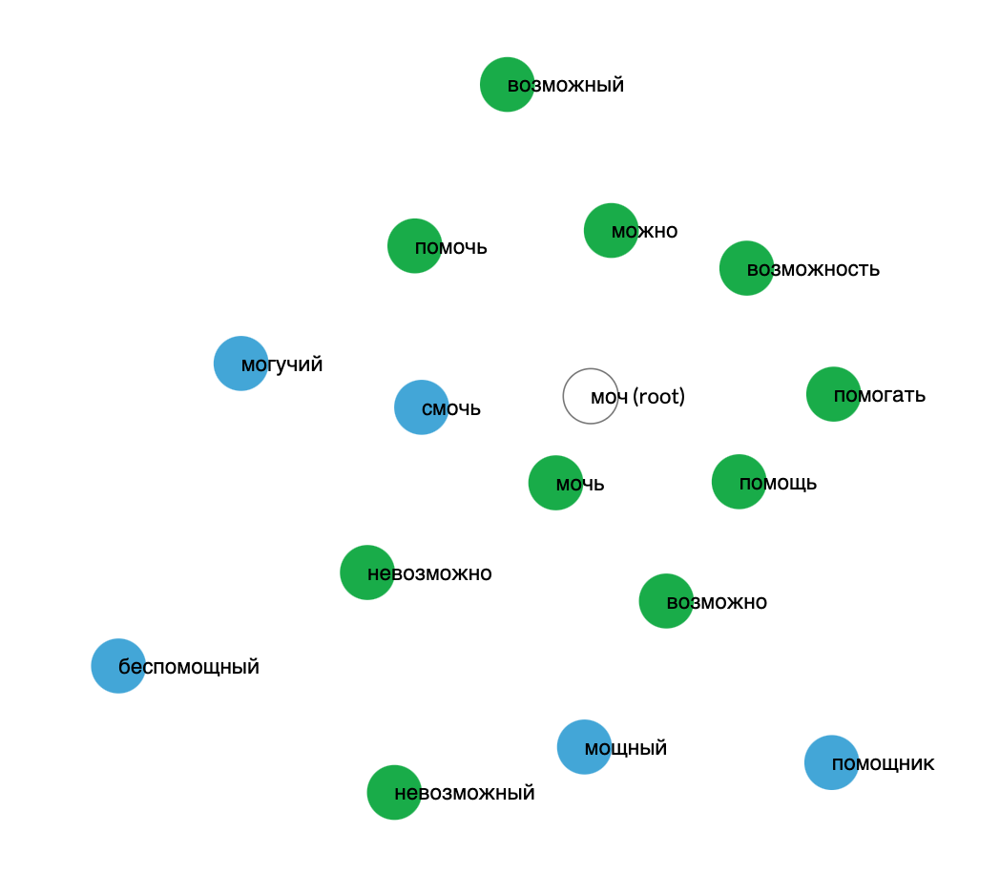
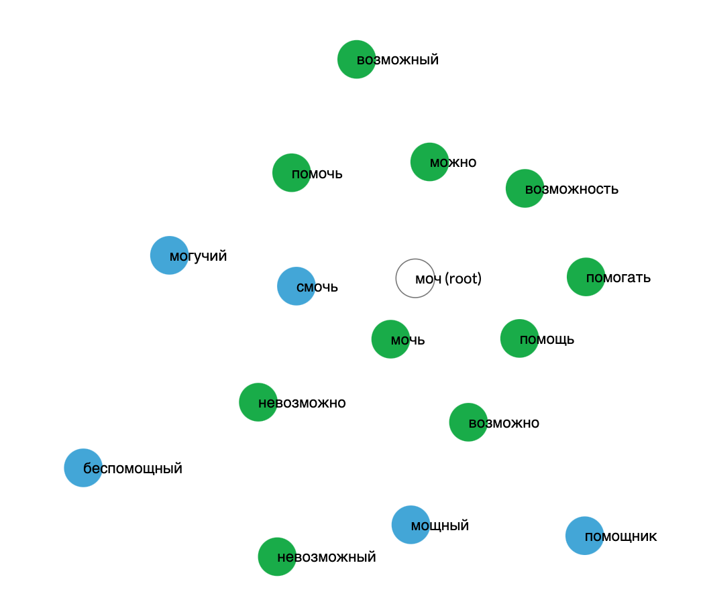
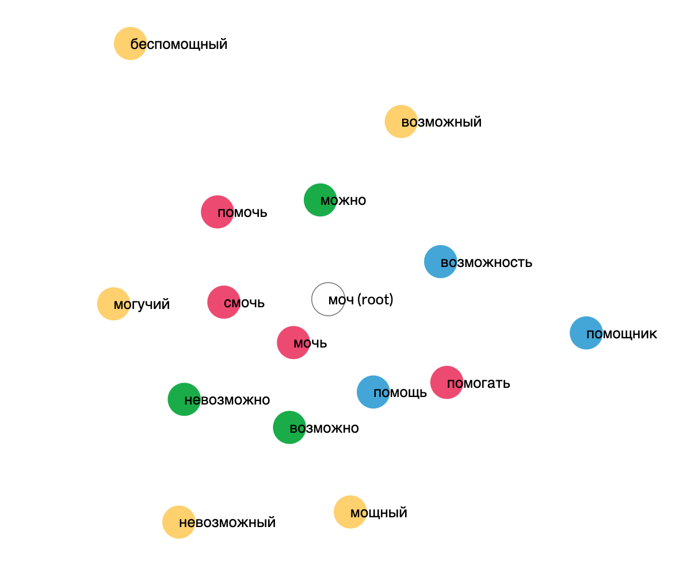

Word Formation
The name for the Word Formation tool in Russian is slovoobrazovanie (словообразование), literally meaning "word formation" or "word derivation". Like the name suggests, the tool presents information related to word roots, showing users the common derivation of different families of words. Learning the meaning or association of different word roots can be very helpful to Russian language learners because in Russian the 228 most common roots produce upwards of 20,000 words, an average of 90 words per root (source).
The tool also offers information on word frequency, helping language learners understand which words may be more or less applicable in their language studies, and part of speech, aiding learners in the ability to recognize different parts of speech in Russian.
The live tool can be found on the Visualizing Russian website.
Below: Demo of the Word Formation tool on the root moch (моч) which refers to the meaning "to be able." Note that a word circle's distance from the center of the cloud indicates its frequency. More frequent words are closer to the center, less frequent words are farther away. See the legend in the dashboard for the leveling based on the database:
 

Below: Information tooltip displayed on hovering over the word circle for vozmozhnost' (возможность):

Below: Part of speech legend and demo of coloring the word circles by part of speech:
